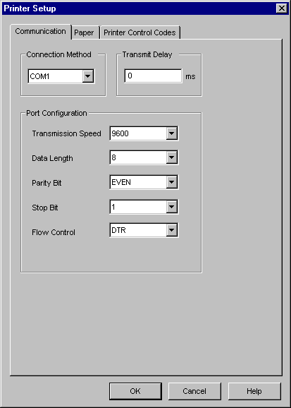

|
|
|
|
|
|
|
|

Select the port to connect the printer in the Connection Method drop-down list box in the Communication tab.
|
LPT1 |
Select this type when connecting the printer to the printer port (PIO) on the target machine. |
|
COM1 |
Select this type when connecting the printer to the serial port (RS-232C) on the target machine. |
|
LPR |
Select this type when connecting a network printer to the target machine. |
|
IPP |
Select this type when connecting a network printer on the intranet or Internet to the target machine. |
|
USB |
Select this type when connecting a USB printer to the USB port on the target machine. |
|
USB-PIO |
Select this type when connecting the printer port (PIO) on the printer to the USB port on the target machine. |
|
USB-SIO |
Select this type when connecting the printer port (SIO) on the printer to the USB port on the target.
|
Set the Transmit Delay (in milliseconds), which is the delay between printed lines. For optimal results, it is recommended you set the delay to the following values:
4000 ms for ESC/P if using an Epson dot matrix printer
20 ms for PCL3 or PCL5 if using an HP inkjet printer
0 ms if using an Epson or HP laser printer.
Set up other settings as required. The settings will differ depending on the selection in the Connection Method (see step 1).

IPP stands for Internet Printing Protocol. This enables you to print directly to the printer or through a printer server. For more information, see Section 27.1.3.4, Example of Using an IPP Connection.